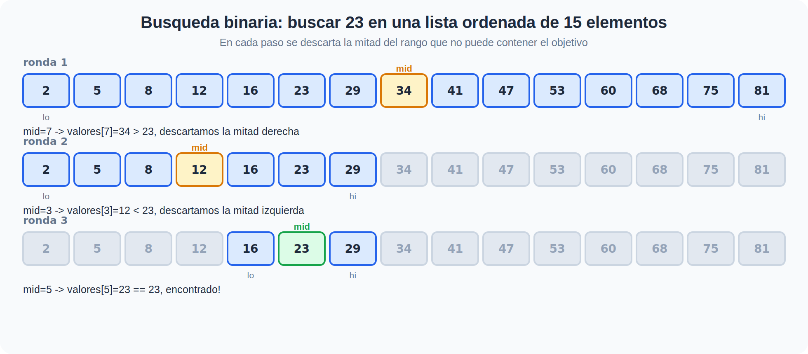

Búsqueda#
Buscar un elemento dentro de una colección es una de las operaciones más comunes en programación: encontrar un usuario por su cédula, verificar si una palabra está en un diccionario, comprobar si un valor ya fue procesado. En esta sección vemos dos formas de resolverlo — una que funciona siempre, y otra mucho más rápida que exige una condición extra.
Comparativa rápida#
Algoritmo |
Idea central |
Requisito |
Complejidad (peor caso) |
|---|---|---|---|
Búsqueda lineal |
Revisar los elementos uno por uno, en orden |
Ninguno |
O(n) |
Búsqueda binaria |
Descartar la mitad de los candidatos en cada paso |
La lista debe estar ordenada |
O(log n) |
La búsqueda lineal es el enfoque de fuerza bruta aplicado a este problema: no asume nada sobre los datos, así que siempre funciona, pero en el peor caso tiene que revisar cada elemento. La búsqueda binaria cambia esa garantía por velocidad: si puedes ordenar los datos una vez (o ya vienen ordenados), cada búsqueda posterior es mucho más barata.
Búsqueda binaria: descartar la mitad en cada paso#

La clave está en que la lista esté ordenada: si el elemento del medio es mayor que lo que buscas, sabes que todo lo que está a su derecha también lo es, así que puedes descartarlo sin revisarlo uno por uno. Esa es la diferencia entre recorrer la lista completa y saltar directamente a la mitad relevante en cada paso.
¿Cuándo usar cada una?#
Úsala si… |
Evítala si… |
|---|---|
Lineal — la lista es pequeña, no está ordenada, o solo vas a buscar una vez |
Vas a hacer muchas búsquedas sobre la misma lista grande |
Binaria — la lista ya está ordenada, o el costo de ordenarla se paga una sola vez y luego buscas muchas veces |
La lista cambia constantemente (insertar/eliminar rompe el orden) y no vale la pena reordenar en cada cambio |
Note
La búsqueda binaria es el mismo patrón de divide y vencerás que viste en la Unidad 2 con la potencia rápida: en cada paso el problema se reduce a la mitad de su tamaño, y por eso su complejidad es logarítmica en vez de lineal.
Manos a la obra! 🔍🐍#
Algoritmos de búsqueda en Python — implementación de búsqueda lineal, búsqueda binaria (iterativa y recursiva), una comparación de rendimiento y ejercicios propuestos.